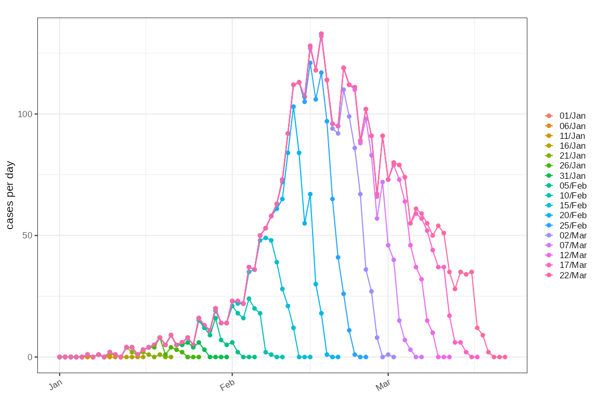
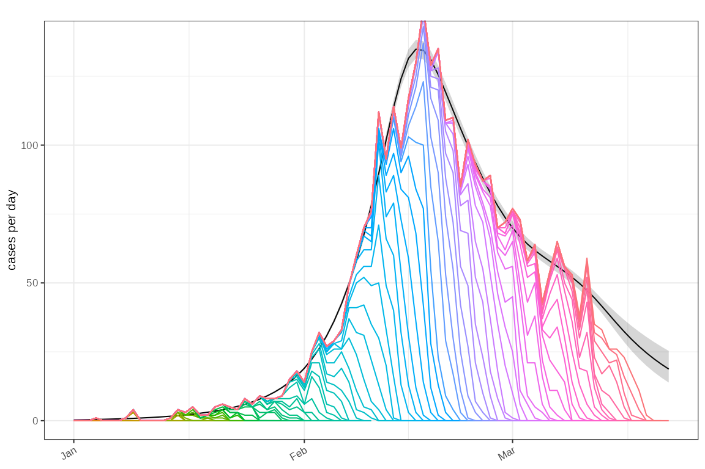
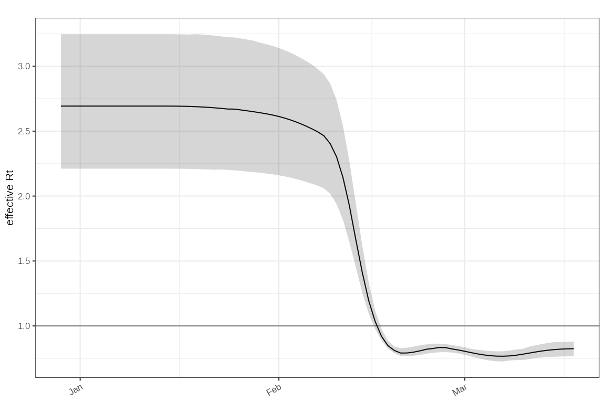

Estimating the reproduction number from right censored data
Source:vignettes/right-censoring.Rmd
right-censoring.RmdBackground
Right censoring typically is seen in epidemiological data as a result of delays observing a proportion of patients.
Simulation
TODO: setup simulation.
# changes = dplyr::tribble(
# ~t, ~r,
# 0, 0,
# 5, 0.2,
# 10, 0.1,
# 20, 0,
# 25, -0.1,
# 35, -0.05,
# 45, 0.1
# )
#
# bpm = sim_branching_process(seed = 100) %>%
# ggoutbreak::sim_apply_delay() %>%
# glimpse()
#
#
# # timeseries counts by observation day:
# # All of this is observation delay (not physiological delay)
# # sample results available when with result (sample date)
# # admissions and deaths delayed reporting.
# # test results available immediately (reporting date)
# # symptoms available immediately
#
# delayed_counts = bpm %>%
# ggoutbreak::sim_summarise_linelist(
# censoring = list(
# admitted = \(t) rgamma2(t, mean = 5),
# death = \(t) rgamma2(t, mean = 10),
# sample = \(t, result_delay) result_delay
# ),
# max_time = 0:80
# )
#
# plot_counts(
# delayed_counts %>% filter(obs_time %% 10 == 0),
# mapping = aes(colour = labels(obs_time))
# ) +
# geom_line() +
# facet_wrap(~statistic, scales = "free_y")
#
# test_delayed_observation = delayed_counts %>%
# filter(statistic == "admitted") %>%
# select(statistic, obs_time, time, count) %>%
# glimpse()
sim = test_delayed_observation
plot_counts(sim %>% dplyr::filter(obs_time %% 10==0), mapping = ggplot2::aes(colour=factor(obs_time)))+
ggplot2::geom_line()
Fit a GAM with a delay term in it:
model = gam_delayed_reporting(knots_fn = ~ c(15,30,40,45,50,60,70,75))
tmp3 = sim %>% poisson_gam_model(
model_fn = model$model_fn,
predict = model$predict,
ip=test_ip)Plot the fitted incidence accounting for non observed cases:
plot_incidence(tmp3)+
ggplot2::geom_line(
data=sim,
mapping = ggplot2::aes(x=as.Date(time),y=count,colour=as.factor(obs_time))
)+
ggplot2::guides(colour=ggplot2::guide_none())
Plot the associated estimate:
plot_rt(tmp3)